Poligon, Üçgen Alanı
[8] notlarından iki vektörün temsil ettiği bir üçgenin alanının bu iki vektörün çapraz çarpmından gelen vektörün uzunluğu olduğunu biliyoruz.
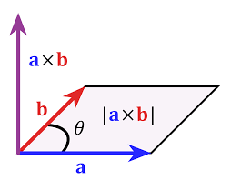
O iki vektörün temsil ettiği üçgenin alanı ise paralelogramın yarısıdır,
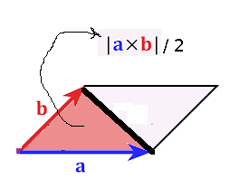
Bir üçgenin alanını içindeki üç tane alt üçgen üzerinden de hesaplayabilirdik, elimizde üç nokta var ise, mesela \((x_1,y_1)\), \((x_2,y_2)\), \((x_3,y_3)\), üçgenin ortasında orijin olduğunu kabul edersek, orijinden o noktalara giden üç vektör üzerinden 3 tane üçgen ile büyük üçgenin alanını hesaplayabiliriz [9, sf. 272],
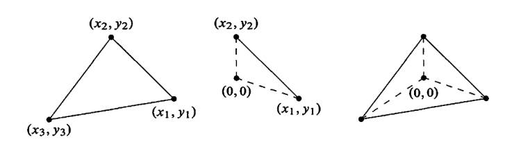
\[ Alan = 1/2 \left( \left|\begin{array}{cc} x_1 & y_1 \\ x_2 & y_2 \end{array}\right| + \left|\begin{array}{cc} x_2 & y_2 \\ x_3 & y_3 \end{array}\right| + \left|\begin{array}{cc} x_3 & y_3 \\ x_1 & y_1 \end{array}\right| \right) \]
Üç tane determinant hesabı gösteriliyor, açılımı
\[ \frac{1}{2} (x_1 y_2 - x_2 y_1) + \frac{1}{2} (x_2 y_3 - x_3 y_2) + \frac{1}{2} (x_3 y_1 - x_1 y_3) \]
Benzer şekilde herhangi bir poligon alanı da hesaplanabilir,
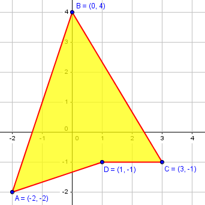
Bu poligon içinde üçgenleri toplayarak tüm poligon alanı hesaplanır,
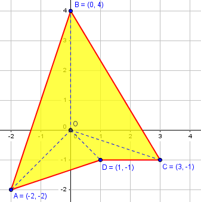
import numpy.linalg as lin
pts = [[-2, -2],[0, 4],[3, -1],[1, -1]]
s = \
lin.det(np.vstack((pts[0],pts[1]))) + \
lin.det(np .vstack((pts[1],pts[2]))) + \
lin.det(np.vstack((pts[2],pts[3]))) + \
lin.det(np.vstack((pts[3],pts[0])))
print ((np.abs(s) / 2))13.0Vektörlerin illa ki bir orijinden çıktığı varsayımı da şart değil, üstteki hesabı orijin merkezli olmayan noktalar için yaparsak yine aynı sonucu elde ediyoruz, bunun ispatını vermiyoruz fakat düşünürsek her türlü üçgeni alanını değiştirmeden sadece kaydırıp orijin merkezli hale getirebilirdik, ve yakın orantılı sayılarla yapılan benzer hesaplar hala geçerli olurdu.
Bu konu hakkında karşımıza çıkabilecek bir isim Ayakkabı Bağı (Shoelace) tekniği, bu teknik üstteki yaklaşımın cebirsel olarak açılımıdır sadece, değişkenler belli şekilde yanyana dizilince bir çapraz ayakkabı bağı şekli çıktığı için bu isim verilmiş, tabii bu çaprazlığın üstteki determinantın gerektirdiği çapraz çarpımla yakın ilişkisi olduğu da görülebilir.
Dışbükey Zarf (Convex Hull)
Yaklaşık olarak işleyen yaklaşımlardan biri [3, sf. 154]’de. Bu yaklaşıma göre veri noktalarında önce minimum \(x\) ve maksimum \(x\) değerleri bulunur (yani en sol ve en sağ uç noktalar), ardından bu noktalar arası dikey şeritlere bölünür.
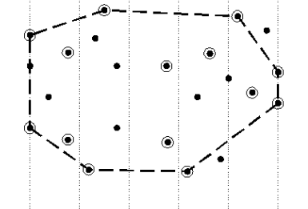
Sonra algoritma solda sağa giderek her şerit içinde dikey en maksimum ve minimum iki noktayı bulur. Bu noktalar sırasıyla üst ve alt zarf noktaları olacaktır. Algoritma tamamlanınca bu minimal, maksimal noktalarının hepsini alıp üzerinde standart dışbükey zarf algoritmalarından birini işletiriz. Fakat eldeki noktaların sayısı artık oldukça azaldığı için algoritmanın tamamı çok hızlı çalışacaktır. Algoritmanın karmaşıklığı \(O(N)\).
pts = np.array(pts)
xmin = np.min(pts[:,0])
xmax = np.max(pts[:,1])
print (xmin, xmax)
bins = np.linspace(xmin,xmax,10)
bidx = np.digitize(pts[:,0], bins)
mins = []; maxs = []
for idx in np.unique(bidx):
tmp=pts[bidx==idx]
mins.append(tmp[np.argmin(pts[bidx==idx,1])])
maxs.append(tmp[np.argmax(pts[bidx==idx,1])])
mins=np.array(mins)
maxs=np.array(maxs)6.85483870968 13.2291666667plt.plot(pts[:,0], pts[:,1], 'o')
plt.plot(mins[:,0], mins[:,1], 'dr')
plt.plot(maxs[:,0], maxs[:,1], 'dr')
plt.xlim(6,12); plt.ylim(8,15)
plt.savefig('enc_02.png')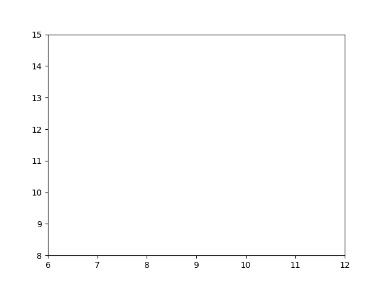
from scipy.spatial import ConvexHull
approx = np.vstack((mins,maxs))
hull = ConvexHull(approx)
plt.plot(approx[:,0], approx[:,1], 'o')
for simplex in hull.simplices:
plt.plot(approx[simplex, 0], approx[simplex, 1], 'k-')
plt.xlim(6,12); plt.ylim(8,15)
plt.savefig('enc_10.png')Nokta, Bölge İçinde mi Dışında mı?
Diyelim ki 2 boyutta olmak üzere, elimizde dışbükey bir bölgeyi temsil eden noktalar var, ve elimizdeki bir başka noktanın bu bölge içinde mi dışında mı olduğunu merak ediyoruz. Bölgeyi tanımlayan analitik bir fonksiyon yok, mesela bir elips formülü gibi bir tanım olsaydı, direk herhangi bir kordinatı geçip \(<1\), ya da \(>1\) cevabını alabilirdik. Burada noktalar var, ama araları birleşik değil.
Çapraz çarpımla bu sorunu çözebiliriz [4]. Bir nokta bir vektörün sağında mı solunda mı sorusunun cevabını çapraz çarpımdan alabiliriz, tabii nokta vektör olarak gösterilebildiğine göre, bir vektör diğerinin sağında mı solunda mı sorusu.. Ama bunu da açalım, sağda olmak demek, “saat yönüne 180 dereceden az gitmek’’ demek. Neyse, sağda solda olmanın fark ettiğini biliyoruz, bir, sağ el kuralından, iki, \(A \times B = -B \times A\). Tüm bu tanımlar tabii ki temelde gidip determinant kullanan hesaba bağlanıyor. Söylediklerimizin hepsi o tanım üzerinde test edilebilir, bkz [5].
O zaman çapraz çarpım bize sağda, solda olmayı söylüyorsa, şu hesabı yaparsak ne olur? Verili bir \(x\) noktası ve bir kapalı bölge oluşturan \(p_1,..,p_N\) var, biz her \(i = 1,..,N\) için
\[ (x-p_i) \times (p_{i+1}-p_i) \]
hesabını yaparız (not bu hesap dışbükey bölgeler için işler). Bu hesap şu vektörleri baz alıyor,
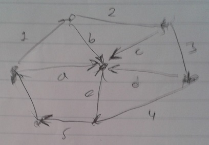
\(p_{i+1}-p_i\) kapalı bölgeyi çevreleyen vektörler, \(x-p_i\) ise bölge noktasından içeride (ya da dışarıda) olan noktaya giden vektör. Eğer bir nokta bölge içindeyse 1-a, 2-b çapraz çarpımları hep aynı işaretli olmalı, yani \(x\) her zaman 1’ın 2’nin, vs. sağında. Ama nokta dışarıda olsaydı,
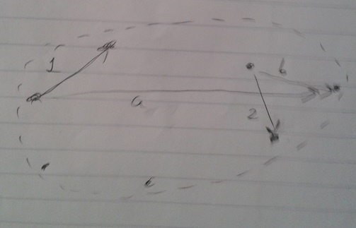
1-a ile 2-b çapraz çarpımlarının işareti farklı mesela. Bunu kullanabiliriz, tüm çapraz çarpımları alıp sonuç vektöründeki tüm öğelerin aynı işarette olup olmadığını kontrol ederiz. Eğer öyle ise nokta içeridedir, yoksa dışarıda. Örnek kod ve bazı veriler üzerinde görelim.
import pandas as pd
from math import sqrt, fabs
def plot_line(pt1,pt2,color):
plt.plot(np.array([pt1[0],pt2[0]]),np.array([pt1[1],pt2[1]]),color=color)
def plot_quad(c,color='r'):
plot_line(c[1],c[0],color)
plot_line(c[2],c[1],color)
plot_line(c[3],c[2],color)
plot_line(c[0],c[3],color)
rect1 = [[6,8],[12,10],[13,15],[6,14]]
plot_quad(rect1)
plt.xlim(0,20); plt.ylim(0,20)
pt1 = np.array([10,10])
pt2 = np.array([15,5])
plt.plot(pt1[0],pt1[1],'gd')
plt.plot(pt2[0],pt2[1],'gd')
plt.savefig('enc_07.png')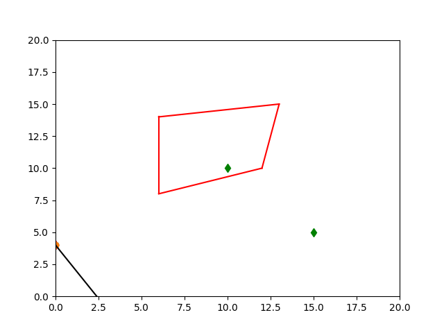
İki nokta seçtik, biri kapalı 4 nokta içinde, diğeri dışında.
def same_sign(arr): return np.all(arr > 0) if arr[0] > 0 else np.all(arr < 0)
def inside_quad(rect, pt):
pts = np.array(rect)
a = pts - pt
d = np.zeros((4,2))
d[0,:] = pts[1,:]-pts[0,:]
d[1,:] = pts[2,:]-pts[1,:]
d[2,:] = pts[3,:]-pts[2,:]
d[3,:] = pts[0,:]-pts[3,:]
res = np.cross(a,d)
return same_sign(res), res
print (inside_quad(rect1, pt1))
print (inside_quad(rect1, pt2))(True, array([ 4., 10., 32., 24.]))
(False, array([-36., -20., 72., 54.]))Sonuç beklenen şekilde geldi.
Sargılanan Sayı Algoritması (Winding Number Algoritm)
Eğer bir nokta bir polygon içinde ise o noktadan her köşe noktasına birer çizgi çeksek ve ortaya çıkan açılara baksak, bu açılar 360’a toplanacaktır. Fakat nokta dışarıda ise bu doğru olmazdı,
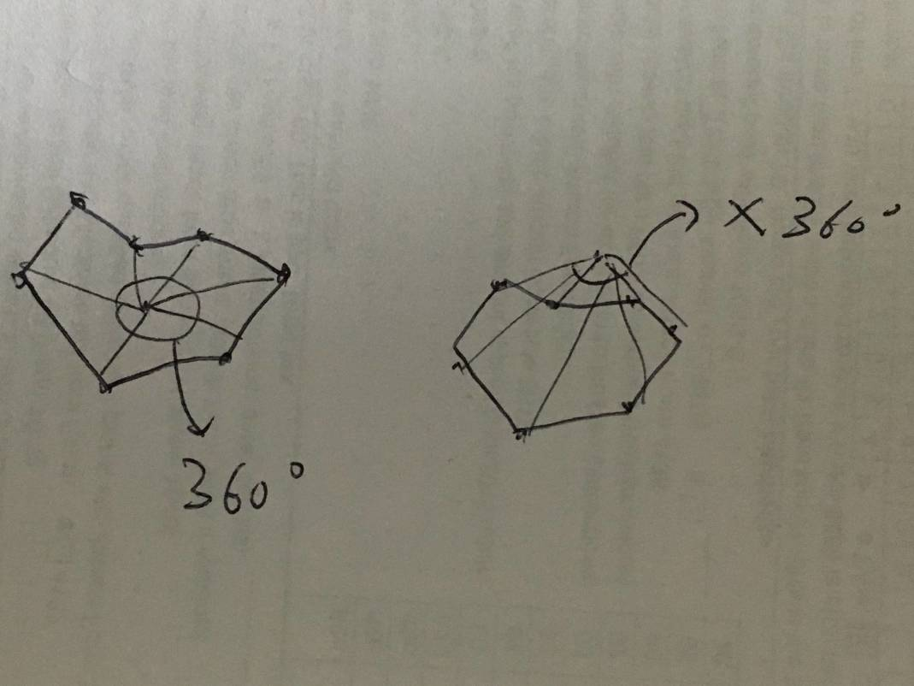
Sargılanan sayı algoritması bunu temel alıyor, bkz [6], örnek kod alttadır,
import math
def offsetCoords(polygon, newOrigin):
offsetPolygon = []
for v in polygon:
offsetPolygon.append((v[0]-newOrigin[0], v[1]-newOrigin[1]))
return offsetPolygon
def dotProduct(v1, v2):
return v1[0]*v2[0]+v1[1]*v2[1]
def vectorLen(v):
return (v[0]**2+v[1]**2)**.5
def angleBetweenVectors(v1, v2):
cosine = dotProduct(v1, v2) / (vectorLen(v1) * vectorLen(v2))
return math.acos(cosine)
def isWithin(point, polygon):
if point in polygon:
return False
sumAngles = 0
for i in range(len(polygon) - 1):
sumAngles += angleBetweenVectors(polygon[i], polygon[i+1])
if math.isclose(sumAngles, math.pi*2):
return True
else:
return False
polygon = [(2,0), (4,1), (4,4), (2,5), (1,2), (2,0)]
coords = (3,3)
point = (float(coords[0]), float(coords[1]))
offsetPolygon = offsetCoords(polygon, point)
offsetPoint = (0, 0)
result = 'Is POINT {} within POLYGON {}? {}.'.format(point, polygon, isWithin(offsetPoint, offsetPolygon))
print(result) Is POINT (3.0, 3.0) within POLYGON [(2, 0), (4, 1), (4, 4), (2, 5), (1, 2), (2, 0)]? True.Dış Geometrik Objenin İç Noktalara Uyum Skoru
Bazen önceden bilinen bir çokgenin (dörtgen, beşgen, vs.) onun içinde olan noktaları ne kadar iyi “kapsadığını’’ bir skor ile belirtmek gerekebilir. Mesela gürültülü bir nokta bulutundan yaklaşık dışbükey zarf çıkarttık, ve şimdi eldeki bir hipotez dörtgenin bu veriye ne kadar iyi uyduğunu bulmak istiyoruz.
Şöyle bir yaklaşım düşünülebilir. Her nokta için o noktanın kapsayan tüm kenarlara ne kadar uzak olduğunu ölçeriz, bunlar arasında minimum olan uzaklığı alırız. Eğer bir kenar bir noktanın yanındaysa onu kapsıyor demektir, ayrıca bir noktanın en yakınındaki kenar uzakta ise kapsama iyi değil demektir. Kenarlar dışına düşmek ne olacak? Bu durum noktanın içeride olup olmadığı sorusu ile halledilir, dışarı düşen noktalara cezalandırma amaçlı yapay yüksek bir uzaklık atanabilir. Ardından tüm bu minimum uzaklıklar toplanır ve genel bir skor ortaya çıkartılır.
def pdis(a, b, c):
t = b[0]-a[0], b[1]-a[1] # Vektor ab
dd = sqrt(t[0]**2+t[1]**2) # ab uzunlugu
t = t[0]/dd, t[1]/dd # ab birim vektoru
n = -t[1], t[0] # ab'ye normal birim vektor
ac = c[0]-a[0], c[1]-a[1] # vector ac
return fabs(ac[0]*n[0]+ac[1]*n[1]) # ac'nin n'e yansimasi (minimum uzaklik)
def score_quad_fit(c, pt):
arr = np.array([pdis(c[1],c[0],pt), pdis(c[2],c[1],pt), \
pdis(c[3],c[2],pt), pdis(c[0],c[3],pt) ])
i,tmp = inside_quad(c, pt)
if i==False: i=10.
return np.min(arr) * i
plt.plot(approx[:,0], approx[:,1], 'o')
rect1 = [[6,8],[12,10],[13,15],[6,14]]
plot_quad(rect1,'b')
r1total = np.array([score_quad_fit(rect1,p) for p in pts]).sum()
rect2 = [[7,9],[12,10],[11,14],[6,12]]
plot_quad(rect2,'r')
r2total = np.array([score_quad_fit(rect2,p) for p in pts]).sum()
rect3 = [[7,9],[11,10],[10,14],[6,12]]
plot_quad(rect3,'k')
r3total = np.array([score_quad_fit(rect3,p) for p in pts]).sum()
print ('mavi',r1total)
print ('kirmizi',r2total)
print ('siyah',r3total)
plt.xlim(4,14); plt.ylim(6,17)
plt.savefig('enc_11.png')mavi 65.8765373106
kirmizi 36.3649774766
siyah 53.192955306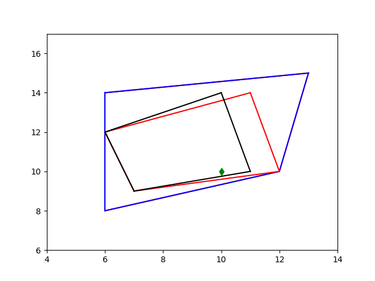
Üstteki çıktılara göre mavi renkli dörtgenin kapsaması en kötü, en iyisi kırmızı olan. Daha küçük siyah dörtgen de fena kapsamıyor fakat bu dörtgen sağdaki bazı noktaları dışarıda bırakmış. Bu noktalar rutinimiz tarafından 10 skor ile cezalandırılıyor.
Kaynaklar
[3] Preparata, Computational Geometry An Introduction
[4] Mathematics Stack Exchange, Determine If 2D Pixel Inside a Region Without Formula,http://math.stackexchange.com/questions/1956626/determine-if-2d-pixel-inside-a-region-without-formula
[5] Bayramlı, Çok Değişkenli Calculus, Ders 3
[6] Stackoverflow, https://stackoverflow.com/a/43822141/423805
[8] Bayramlı, Çok Değişkenli Calculus, Ders 2
[9] Strang, Introduction to Linear Algebra, 4th Ed
[10] Math Doctors, Polygon Coordinates and Areas, https://www.themathdoctors.org/polygon-coordinates-and-areas/